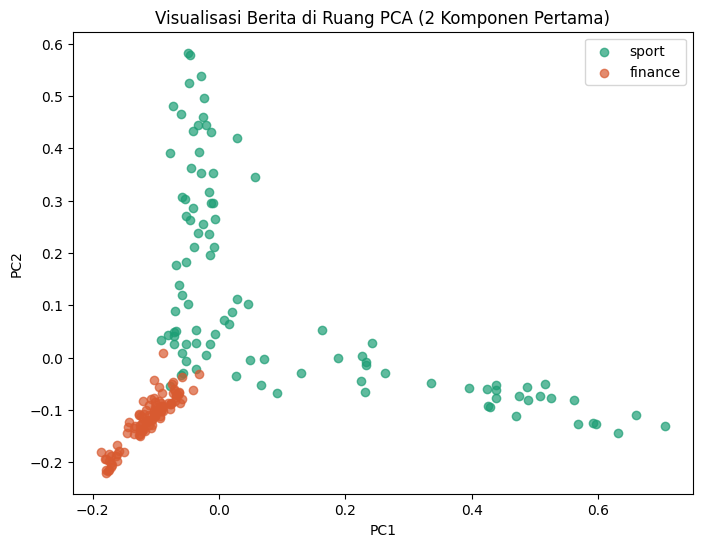

Representasi TF-IDF dan Reduksi Dimensi Data Berita#
Setelah data berita berhasil dikumpulkan dan melalui tahap preprocessing, data teks perlu diubah menjadi bentuk numerik agar dapat diolah lebih lanjut. Pada tahap ini, teks berita direpresentasikan menggunakan TF-IDF (Term Frequency–Inverse Document Frequency) untuk memberikan bobot pada setiap kata berdasarkan tingkat kepentingannya dalam dokumen.
Data hasil TF-IDF memiliki jumlah fitur yang cukup banyak karena setiap kata yang terdapat dalam vocabulary menjadi sebuah fitur. Oleh karena itu, dilakukan reduksi dimensi menggunakan PCA (Principal Component Analysis) untuk mengurangi jumlah fitur dengan tetap mempertahankan sebagian besar informasi dari data.
Tahapan yang dilakukan meliputi pembentukan vocabulary, representasi teks menggunakan TF-IDF, dan reduksi dimensi menggunakan PCA.
Install Library NLTK#
import nltk
nltk.download('punkt')
nltk.download('punkt_tab')
nltk.download('words')
[nltk_data] Downloading package punkt to C:\Users\triad/nltk_data...
[nltk_data] Package punkt is already up-to-date!
[nltk_data] Downloading package punkt_tab to
[nltk_data] C:\Users\triad/nltk_data...
[nltk_data] Package punkt_tab is already up-to-date!
[nltk_data] Downloading package words to C:\Users\triad/nltk_data...
[nltk_data] Package words is already up-to-date!
True
import pandas as pd
df = pd.read_csv("dataset_berita.csv")
print(df.shape)
df.head()
(200, 3)
| id | isi_berita | label | |
|---|---|---|---|
| 0 | 1 | Jepang - Austin Krajicek-Nikola Mektic berhasi... | sport |
| 1 | 2 | Jorge Martin sedang memperjuangkan titel juara... | sport |
| 2 | 3 | Rider Indonesia Veda Ega Pratama balapan di Ma... | sport |
| 3 | 4 | Pelatih speed tim panjat tebing, Fitriyani, me... | sport |
| 4 | 5 | Pertamina Grand Prix of Indonesia 2026 sudah m... | sport |
Preprocessing Data#
Data berita yang telah dikumpulkan terlebih dahulu dilakukan preprocessing. Pada tahap cleaning, teks diubah menjadi huruf kecil, URL, emoji, tanda baca, dan angka dihapus, serta spasi yang berlebih dirapikan. Setelah itu, teks diubah menjadi token atau kata-kata menggunakan proses tokenisasi.
import re
import emoji
def cleaning(text):
text = str(text).lower()
text = re.sub(r'http\S+|www\S+', '', text)
text = emoji.replace_emoji(text, replace='')
text = re.sub(r'[^\w\s]', ' ', text)
text = re.sub(r'\d+', '', text)
text = re.sub(r'\s+', ' ', text).strip()
return text
df['isi_bersih'] = df['isi_berita'].apply(cleaning)
df[['isi_berita', 'isi_bersih']].head()
---------------------------------------------------------------------------
ModuleNotFoundError Traceback (most recent call last)
Cell In[3], line 2
1 import re
----> 2 import emoji
4 def cleaning(text):
5 text = str(text).lower()
ModuleNotFoundError: No module named 'emoji'
from nltk.tokenize import word_tokenize
df['tokens'] = df['isi_bersih'].apply(word_tokenize)
df[['isi_bersih', 'tokens']].head()
| isi_bersih | tokens | |
|---|---|---|
| 0 | jepang austin krajicek nikola mektic berhasil ... | [jepang, austin, krajicek, nikola, mektic, ber... |
| 1 | jorge martin sedang memperjuangkan titel juara... | [jorge, martin, sedang, memperjuangkan, titel,... |
| 2 | rider indonesia veda ega pratama balapan di ma... | [rider, indonesia, veda, ega, pratama, balapan... |
| 3 | pelatih speed tim panjat tebing fitriyani meng... | [pelatih, speed, tim, panjat, tebing, fitriyan... |
| 4 | pertamina grand prix of indonesia sudah melahi... | [pertamina, grand, prix, of, indonesia, sudah,... |
Selanjutnya dilakukan stopword removal untuk menghapus kata-kata yang dianggap kurang memiliki informasi penting. Stopword yang digunakan berasal dari Sastrawi dan ditambahkan beberapa kata secara manual.
from Sastrawi.StopWordRemover.StopWordRemoverFactory import StopWordRemoverFactory
from Sastrawi.Stemmer.StemmerFactory import StemmerFactory
from nltk.corpus import words as english_words
stopword_factory = StopWordRemoverFactory()
indo_stopwords = set(stopword_factory.get_stop_words())
factory = StemmerFactory()
stemmer = factory.create_stemmer()
english_vocab = set(w.lower() for w in english_words.words())
tambahan_stopwords = {"kali", "mana", "hal", "tim", "era", "pun", "apa", "dan", "dari", "akan", "yang", "saya"}
indo_stopwords = indo_stopwords.union(tambahan_stopwords)
def kata_asing(tokens):
asing = []
for t in tokens:
if t in indo_stopwords:
continue
if len(t) <= 3:
continue
stem = stemmer.stem(t)
if t in english_vocab and stem == t:
asing.append(t)
return asing
contoh = df['tokens'].iloc[0]
print(kata_asing(contoh))
['austin', 'ganda', 'japan', 'open', 'sport', 'ganda', 'japan', 'open']
def remove_stopwords(tokens):
return [t for t in tokens if t not in indo_stopwords]
df['tokens_no_stopword'] = df['tokens'].apply(remove_stopwords)
df[['tokens', 'tokens_no_stopword']].head()
| tokens | tokens_no_stopword | |
|---|---|---|
| 0 | [jepang, austin, krajicek, nikola, mektic, ber... | [jepang, austin, krajicek, nikola, mektic, ber... |
| 1 | [jorge, martin, sedang, memperjuangkan, titel,... | [jorge, martin, sedang, memperjuangkan, titel,... |
| 2 | [rider, indonesia, veda, ega, pratama, balapan... | [rider, indonesia, veda, ega, pratama, balapan... |
| 3 | [pelatih, speed, tim, panjat, tebing, fitriyan... | [pelatih, speed, panjat, tebing, fitriyani, me... |
| 4 | [pertamina, grand, prix, of, indonesia, sudah,... | [pertamina, grand, prix, of, indonesia, melahi... |
Setelah stopword dihapus, dilakukan stemming menggunakan stemmer Bahasa Indonesia untuk mengubah kata menjadi bentuk dasarnya. Dari proses ini dihasilkan kolom tokens_final yang digunakan pada tahap berikutnya.
def stem_tokens(tokens):
return [stemmer.stem(t) for t in tokens]
hasil_stem = []
total = len(df)
for i, tokens in enumerate(df['tokens_no_stopword'], 1):
hasil_stem.append(stem_tokens(tokens))
print(f"\rStemming progress: {i}/{total}", end="", flush=True)
df['tokens_final'] = hasil_stem
print("\nSelesai stemming")
df[['tokens_no_stopword', 'tokens_final']].head()
Stemming progress: 200/200
Selesai stemming
| tokens_no_stopword | tokens_final | |
|---|---|---|
| 0 | [jepang, austin, krajicek, nikola, mektic, ber... | [jepang, austin, krajicek, nikola, mektic, has... |
| 1 | [jorge, martin, sedang, memperjuangkan, titel,... | [jorge, martin, sedang, juang, titel, juara, d... |
| 2 | [rider, indonesia, veda, ega, pratama, balapan... | [rider, indonesia, veda, ega, pratama, balap, ... |
| 3 | [pelatih, speed, panjat, tebing, fitriyani, me... | [latih, speed, panjat, tebing, fitriyani, ungk... |
| 4 | [pertamina, grand, prix, of, indonesia, melahi... | [pertamina, grand, prix, of, indonesia, lahir,... |
Pembentukan Vocabulary#
Setelah preprocessing selesai, seluruh kata dari tokens_final dikumpulkan dan kata yang sama hanya dihitung satu kali. Hasilnya terdapat 5.108 kata unik yang digunakan sebagai vocabulary.
semua_kata = [kata for tokens in df['tokens_final'] for kata in tokens]
reserved_words = {"id", "label"}
vocabulary = sorted(set(
kata for kata in semua_kata
if kata not in reserved_words
))
print(f"Jumlah kata unik setelah filter: {len(vocabulary)}")
print(vocabulary[:30])
Jumlah kata unik setelah filter: 5108
['a', 'aadi', 'abad', 'abai', 'abal', 'abang', 'abdi', 'abdul', 'abdullah', 'abdurrahman', 'abe', 'abipraya', 'abruzzo', 'absen', 'abu', 'abuan', 'ac', 'academy', 'acara', 'acas', 'acceleration', 'accountant', 'accounting', 'accuracy', 'acd', 'aceh', 'acosta', 'action', 'acu', 'acung']
Representasi Berita dengan TF-IDF#
TF-IDF digunakan untuk memberikan bobot pada setiap kata berdasarkan seberapa penting kata tersebut dalam suatu berita. Pada proses ini terdapat dua perhitungan utama, yaitu TF (Term Frequency) dan IDF (Inverse Document Frequency).
Term Frequency (TF): $\( TF(t,d) = \frac{f(t,d)}{\sum_{t' \in d} f(t',d)} \)$
Keterangan:
\(t\) = kata yang dihitung
\(d\) = dokumen/berita
\(f(t,d)\) = jumlah kemunculan kata \(t\) dalam dokumen \(d\)
Penyebut = jumlah seluruh kata dalam dokumen
Inverse Document Frequency (IDF): $\( IDF(t) = \log\left(\frac{N}{df(t)}\right) \)$
Keterangan:
\(N\) = jumlah seluruh dokumen
\(df(t)\) = jumlah dokumen yang mengandung kata t
Kemudian nilai TF dan IDF dikalikan untuk mendapatkan bobot TF-IDF: $\(TFIDF(t,d)=TF(t,d)×IDF(t)\)$
from sklearn.feature_extraction.text import CountVectorizer
df['teks_final'] = df['tokens_final'].apply(lambda tokens: ' '.join(tokens))
vectorizer = CountVectorizer(binary=True, vocabulary=vocabulary)
onehot_matrix = vectorizer.fit_transform(df['teks_final'])
onehot_df = pd.DataFrame(onehot_matrix.toarray(), columns=vectorizer.get_feature_names_out())
onehot_df.insert(0, 'id', df['id'].values)
onehot_df['label'] = df['label'].values
print(onehot_df.shape)
onehot_df.head()
(200, 5110)
| id | a | aadi | abad | abai | abal | abang | abdi | abdul | abdullah | ... | zhang | zidane | zig | zona | zone | zones | zoom | zulhas | zulkifli | label | |
|---|---|---|---|---|---|---|---|---|---|---|---|---|---|---|---|---|---|---|---|---|---|
| 0 | 1 | 0 | 0 | 0 | 0 | 0 | 0 | 0 | 0 | 0 | ... | 0 | 0 | 0 | 0 | 0 | 0 | 0 | 0 | 0 | sport |
| 1 | 2 | 0 | 0 | 0 | 0 | 0 | 0 | 0 | 0 | 0 | ... | 0 | 0 | 0 | 0 | 0 | 0 | 0 | 0 | 0 | sport |
| 2 | 3 | 0 | 0 | 0 | 0 | 0 | 0 | 0 | 0 | 0 | ... | 0 | 0 | 0 | 0 | 0 | 0 | 0 | 0 | 0 | sport |
| 3 | 4 | 0 | 0 | 0 | 0 | 0 | 0 | 0 | 0 | 0 | ... | 0 | 0 | 0 | 0 | 0 | 0 | 0 | 0 | 0 | sport |
| 4 | 5 | 0 | 0 | 0 | 0 | 0 | 0 | 0 | 0 | 0 | ... | 0 | 0 | 0 | 0 | 0 | 0 | 0 | 0 | 0 | sport |
5 rows × 5110 columns
from sklearn.feature_extraction.text import TfidfVectorizer
tfidf_vectorizer = TfidfVectorizer(vocabulary=vocabulary)
tfidf_matrix = tfidf_vectorizer.fit_transform(df['teks_final'])
tfidf_df = pd.DataFrame(
tfidf_matrix.toarray(),
columns=tfidf_vectorizer.get_feature_names_out()
)
tfidf_df.insert(0, 'id', df['id'].values)
tfidf_df['label'] = df['label'].values
print(tfidf_df.shape)
tfidf_df.head()
(200, 5110)
| id | a | aadi | abad | abai | abal | abang | abdi | abdul | abdullah | ... | zhang | zidane | zig | zona | zone | zones | zoom | zulhas | zulkifli | label | |
|---|---|---|---|---|---|---|---|---|---|---|---|---|---|---|---|---|---|---|---|---|---|
| 0 | 1 | 0.0 | 0.0 | 0.0 | 0.0 | 0.0 | 0.0 | 0.0 | 0.0 | 0.0 | ... | 0.0 | 0.0 | 0.0 | 0.0 | 0.0 | 0.0 | 0.0 | 0.0 | 0.0 | sport |
| 1 | 2 | 0.0 | 0.0 | 0.0 | 0.0 | 0.0 | 0.0 | 0.0 | 0.0 | 0.0 | ... | 0.0 | 0.0 | 0.0 | 0.0 | 0.0 | 0.0 | 0.0 | 0.0 | 0.0 | sport |
| 2 | 3 | 0.0 | 0.0 | 0.0 | 0.0 | 0.0 | 0.0 | 0.0 | 0.0 | 0.0 | ... | 0.0 | 0.0 | 0.0 | 0.0 | 0.0 | 0.0 | 0.0 | 0.0 | 0.0 | sport |
| 3 | 4 | 0.0 | 0.0 | 0.0 | 0.0 | 0.0 | 0.0 | 0.0 | 0.0 | 0.0 | ... | 0.0 | 0.0 | 0.0 | 0.0 | 0.0 | 0.0 | 0.0 | 0.0 | 0.0 | sport |
| 4 | 5 | 0.0 | 0.0 | 0.0 | 0.0 | 0.0 | 0.0 | 0.0 | 0.0 | 0.0 | ... | 0.0 | 0.0 | 0.0 | 0.0 | 0.0 | 0.0 | 0.0 | 0.0 | 0.0 | sport |
5 rows × 5110 columns
Teks yang telah melalui preprocessing kemudian digabungkan kembali menjadi teks menggunakan tokens_final. Selanjutnya, TF-IDF digunakan untuk mengubah setiap berita menjadi representasi numerik berdasarkan bobot kepentingan setiap kata dalam dokumen. Hasil representasi menghasilkan 200 berita dengan 5.108 fitur kata.
contoh_doc = tfidf_df.drop(columns=['id', 'label']).iloc[0]
print(contoh_doc.sort_values(ascending=False).head(10))
japan 0.358252
krajicek 0.358252
mektic 0.358252
open 0.288097
artikel 0.255477
ganda 0.255477
putra 0.189728
austin 0.179126
nikola 0.179126
sabet 0.179126
Name: 0, dtype: float64
Pada berita pertama, beberapa kata dengan nilai TF-IDF tertinggi adalah japan, krajicek dan mektic. Hal ini menunjukkan bahwa kata-kata tersebut memiliki bobot yang cukup tinggi pada dokumen tersebut dibandingkan kata lainnya.
tfidf_df.to_csv("tfidf_berita.csv", index=False)
print("Selesai! Tersimpan sebagai tfidf_berita.csv")
Selesai! Tersimpan sebagai tfidf_berita.csv
Hasil TF-IDF kemudian disimpan dalam file tfidf_berita.csv untuk digunakan pada proses selanjutnya.
Reduksi Dimensi dengan PCA#
Data hasil TF-IDF kemudian digunakan sebagai input untuk PCA (Principal Component Analysis). Sebelum PCA, data memiliki ukuran 200 × 5.108, yaitu 200 berita dengan 5.108 fitur.
X = tfidf_df.drop(columns=['id', 'label']).values
y = tfidf_df['label'].values
print("Shape sebelum PCA:", X.shape)
Shape sebelum PCA: (200, 5108)
PCA digunakan untuk mengurangi jumlah fitur dengan mempertahankan informasi utama dari data. Pada notebook, jumlah komponen ditentukan berdasarkan cumulative explained variance sebesar 90%. Hasilnya, dibutuhkan 137 komponen dari 5.108 dimensi awal.
from sklearn.decomposition import PCA
import numpy as np
pca_full = PCA()
pca_full.fit(X)
cumulative_variance = np.cumsum(pca_full.explained_variance_ratio_)
n_components_90 = np.argmax(cumulative_variance >= 0.90) + 1
print(f"Jumlah komponen untuk menjelaskan 90% variansi: {n_components_90}")
print(f"Total dimensi awal: {X.shape[1]}")
Jumlah komponen untuk menjelaskan 90% variansi: 139
Total dimensi awal: 5108
pca = PCA(n_components=n_components_90)
X_reduced = pca.fit_transform(X)
print("Shape setelah PCA:", X_reduced.shape)
pca_df = pd.DataFrame(X_reduced, columns=[f'PC{i+1}' for i in range(X_reduced.shape[1])])
pca_df.insert(0, 'id', tfidf_df['id'].values)
pca_df['label'] = y
pca_df.head()
Shape setelah PCA: (200, 139)
| id | PC1 | PC2 | PC3 | PC4 | PC5 | PC6 | PC7 | PC8 | PC9 | ... | PC131 | PC132 | PC133 | PC134 | PC135 | PC136 | PC137 | PC138 | PC139 | label | |
|---|---|---|---|---|---|---|---|---|---|---|---|---|---|---|---|---|---|---|---|---|---|
| 0 | 1 | 0.016310 | 0.064040 | -0.003596 | 0.058287 | 0.034701 | -0.011416 | -0.013548 | -0.049478 | -0.012545 | ... | 0.030304 | 0.038745 | 0.027398 | 0.023805 | -0.028052 | -0.003597 | 0.016633 | 0.064700 | -0.006247 | sport |
| 1 | 2 | 0.335563 | -0.048594 | 0.026808 | 0.028114 | -0.140747 | 0.024754 | -0.016208 | -0.025431 | 0.007980 | ... | 0.059164 | -0.053914 | -0.069388 | -0.057029 | 0.007123 | -0.054663 | -0.008188 | 0.054430 | -0.075545 | sport |
| 2 | 3 | 0.163250 | 0.052259 | -0.017724 | 0.060311 | 0.330874 | -0.018232 | -0.012890 | -0.057679 | 0.031286 | ... | -0.022419 | 0.091648 | 0.052644 | 0.042707 | 0.075697 | -0.059457 | -0.061724 | 0.029606 | 0.002340 | sport |
| 3 | 4 | -0.009962 | 0.294924 | 0.007640 | -0.004036 | -0.008824 | -0.019960 | 0.017993 | 0.116127 | -0.044190 | ... | -0.030776 | 0.086397 | -0.045490 | -0.104737 | -0.228806 | -0.012939 | 0.017881 | 0.035670 | -0.041894 | sport |
| 4 | 5 | 0.524751 | -0.076431 | 0.015991 | -0.011711 | -0.117077 | -0.012359 | 0.005967 | -0.252379 | 0.178608 | ... | -0.051039 | -0.054479 | -0.077658 | -0.052478 | -0.046393 | 0.052913 | 0.023458 | -0.026328 | 0.042178 | sport |
5 rows × 141 columns
Setelah dilakukan PCA, ukuran data berubah menjadi 200 × 139. Setiap fitur hasil reduksi direpresentasikan sebagai PC1, PC2, hingga PC144.
pca_df.to_csv("pca_berita.csv", index=False)
print("Selesai! Tersimpan sebagai pca_berita.csv")
Selesai! Tersimpan sebagai pca_berita.csv
Hasil akhir PCA kemudian disimpan dalam file pca_berita.csv.
Visualisasi PCA#
import matplotlib.pyplot as plt
plt.figure(figsize=(8, 6))
for label_value, warna in zip(['sport', 'finance'], ['#1D9E75', '#D85A30']):
subset = pca_df[pca_df['label'] == label_value]
plt.scatter(subset['PC1'], subset['PC2'], label=label_value, alpha=0.7, color=warna)
plt.xlabel('PC1')
plt.ylabel('PC2')
plt.title('Visualisasi Berita di Ruang PCA (2 Komponen Pertama)')
plt.legend()
plt.show()

Grafik menunjukkan bahwa berita sport dan finance memiliki pola teks yang berbeda. Berita finance cenderung berkumpul di satu area, sedangkan berita sport lebih menyebar. Artinya, isi atau karakteristik kata yang digunakan pada kedua kategori berita cukup berbeda.